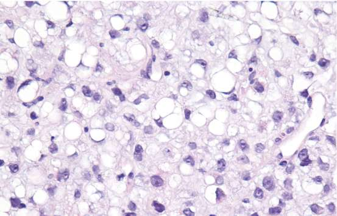
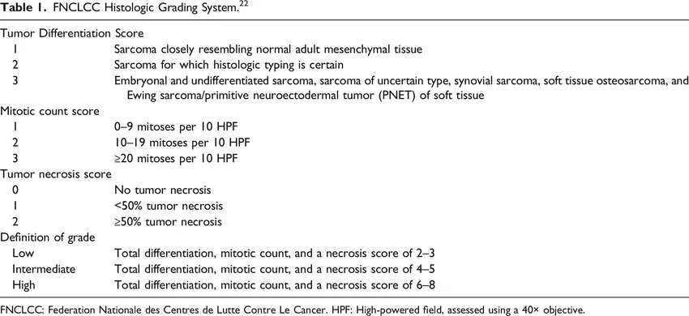

二、最可能的診斷：Myxoid Liposarcoma

臨床與影像依據
- 好發部位：深層大腿軟組織為最常見位置 (佔多數)。
- MRI 特徵：同質訊號 (homogeneous signal)、明顯 contrast retention。
- 年齡：中位數約 45 歲，本案 64 歲仍在合理範圍。

病理組織學依據
- 脂肪母細胞 (lipoblasts) 呈現外觀異常。
- 大量 myxoid 基質。
- 特徵性分支狀小血管 (chicken-wire vasculature)。
- 低惡性度： FNCLCC grade 1, RCC (Round Cell Component) < 5%。若 RCC > 5%，則歸類為高惡性度 (High-grade)，預後顯著變差，轉移率大幅增加。

分子病理學特徵
- 特徵性染色體轉位：
t(12;16)(q13;p11)。 - 產生 FUS::DDIT3 融合基因 (佔 ~95%)。此異常基因製造的嵌合蛋白會干擾脂肪細胞的正常分化，促使腫瘤形成。
- DDIT3 免疫組織化學染色可作為核心輔助診斷工具，區分 MLPS 與其他圓形細胞肉瘤。